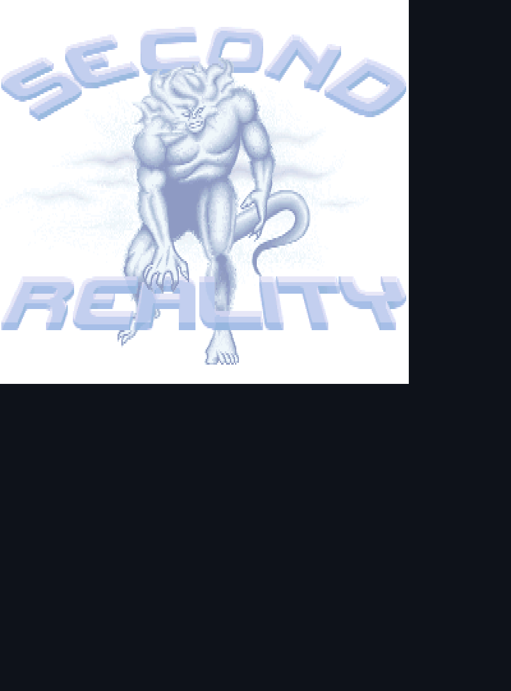
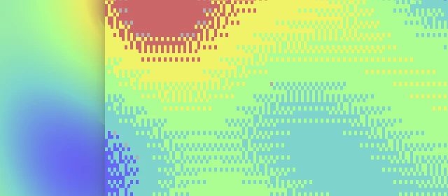

Future Crew 1993
Second
Reality.
Future Crew’s iconic 1993 demo. Not a video: every frame is ANSI escape sequences, rendered live by Puzzle, a GPU terminal emulator.
All creative work is Future Crew’s: the code, the graphics and the music. We didn’t make this demo; we only taught it to speak ANSI and built the terminal it plays in.
- code
- Psi · Trug · Wildfire
- music
- Purple Motion · Skaven
- graphics
- Marvel · Pixel
Kept alive by Conspiracy (Win32) and XorJS (SecondReality++). Thank you, Future Crew, for the inspiration, then and now. Full credits

Your browser doesn't support WebGPU, which Puzzle's browser renderer needs. Try a current Chrome, Edge or Safari
This is not a video. The original demo code runs in your browser and writes each frame as text: ANSI escape sequences. Puzzle, a terminal emulator, parses that byte stream and draws it on the GPU, exactly as it would draw the output of ls.
What you're watching
- Not a videoFuture Crew's original demo code (via SecondReality++) runs in your browser as WebAssembly
- Text onlyeach frame is encoded as escape sequences:
▀half-blocks, two pixels per character cell, 256-colour indices - Palette tricksfades and flashes rewrite the terminal palette with
OSC 4; Puzzle recolours the screen without a single cell being resent - Only changesjust the cells that changed are sent, wrapped in synchronized output (
mode 2026) so each frame appears at once - Puzzleparses the stream (tens of megabytes per second in the busiest scenes) and draws the grid on the GPU, at up to 70 frames per second
- A real terminalthe same byte stream plays natively in Puzzle, Ghostty or any modern terminal
- Look closerhit Stats to see bytes per frame and write latency
Puzzle Terminal
Inside the engine
Rendering
- GPU textSlug-based glyph rendering in WGSL; grid glyphs cached as bitmaps
- ShapingUnicode graphemes, colour emoji, coding ligatures, font fallback
- Hintingoutlines fitted to the pixel grid at small sizes
- Sync outputDEC mode 2026 presents grouped updates in one go
- Live paletteOSC 4 recolours already-drawn indexed cells
Protocols
- VT essentialsxterm + DEC controls, 24-bit colour, alt screen, mouse, bracketed paste
- Kitty graphicsRGB, RGBA and PNG images, Unicode placeholders (opt-in on the web)
- HyperlinksOSC 8 links on any text
- Text sizingOSC 66 scaled text inside the grid
- ClipboardOSC 52 writes under host policy, reads denied by default; OSC 5522 MIME natively
- NotificationsOSC 9, OSC 777 and a bounded OSC 99 subset
- Shell marksOSC 133 prompts, commands and output; automatic shell integration
Browser API
- Settingsuser and session layers, profiles, host-supplied storage
- Busvalidated commands and typed events
- Middlewarepass, replace or cancel input commands
- Bufferretained rows and shell zones
- Annotationsdecorations, markers and ghost text
- Drag and droptext and URI lists via shared paste policy and OSC 72
- Many terminalsseveral per page on one WASM instance and shared GPU resources
Platforms
- macOSnative Rust and C embedding, AppKit example
- LinuxUnix PTY, Vulkan or GL
- WindowsWindows 10/11, ConPTY, Vulkan or Direct3D 12
- WebWebAssembly + WebGPU in a secure context

Plasma in PETSCII
Watch the same plasma flow across a canvas and through C64-style terminal characters.